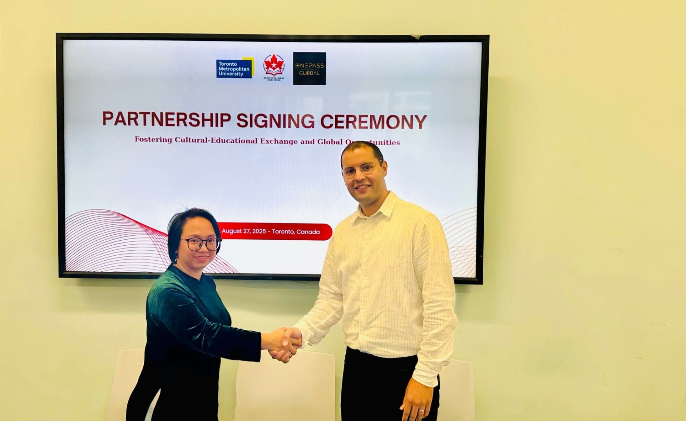
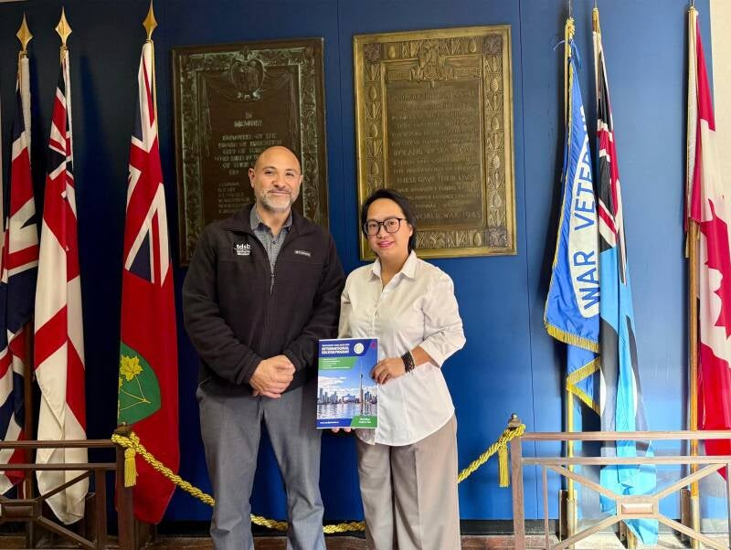
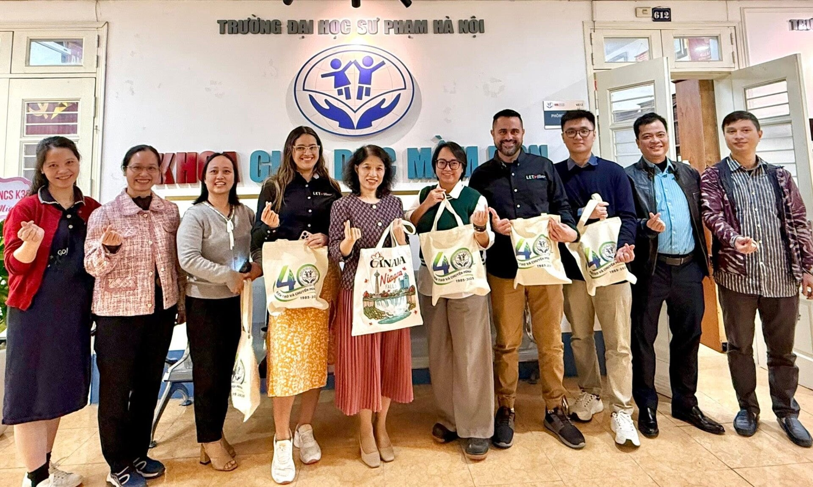
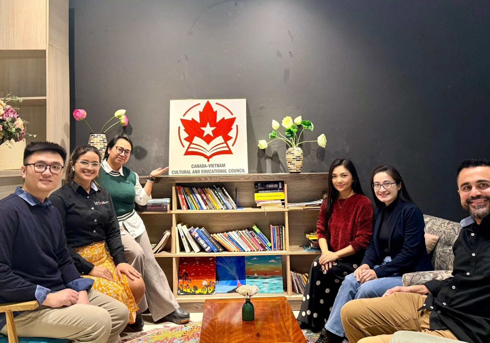
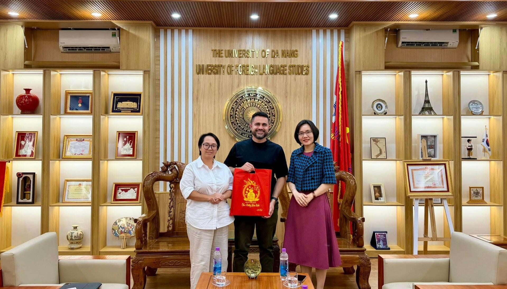

Photo gallery
Moments from CVCEC’s programs and partnerships in Toronto, across Canada and in Vietnam: Vietnamese language and culture classes, youth leadership, cultural events and school partnerships.
Vietnam–Canada dialogue
Meetings and exchanges that connect education communities in Canada and Vietnam.
CVCEC meets a Vietnamese delegation in Canada
Reporting to the Embassy of Canada in Vietnam
80th Reunification Anniversary Gala – Embassy of Vietnam in Ottawa
Cultural diplomacy
Cultural events, workshops and exchanges in Canada and Vietnam.
With veterans at the Vietnam Military History Museum
Vietnamese language and culture with international students
From Lotus to Maple Leaf: a Vietnam–Canada exchange
Lotus tea workshop
Meeting Vietnamese artisans – preserving cultural heritage
Lunar New Year áo dài show


VYRH launch: preserving Vietnamese heritage


Hung Kings’ Commemoration Day 2026


Partnerships
Partnership meetings and signings with schools, colleges and universities in Canada and Vietnam.





Youth programs
Youth leadership, orientation and community activities with the Viet Youth Readiness Hub.